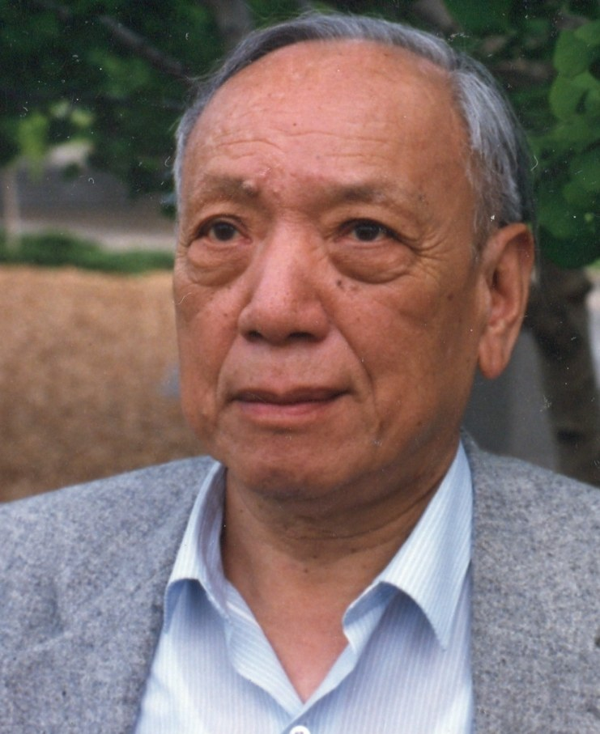

The Hachtroudi Connection
From Cartan’s equivalence problem to CR geometry: the mathematics of Mohsen Hachtroudi’s 1937 Paris thesis, and why geometers still use his name.
From Cartan’s Equivalence Problem to the Hachtroudi Connection
Mohsen Hachtroudi’s doctoral thesis represents one of the early and remarkable applications of Cartan’s method of equivalence to the geometry of differential equations. Its principal construction, now usually referred to as the Hachtroudi connection, has subsequently reappeared in projective differential geometry, CR geometry, the geometry of differential equations, and, in modern terminology, the theory of Cartan and parabolic geometries.
The purpose of this section is to explain the mathematical ideas behind Hachtroudi’s construction from a modern point of view before turning to its more explicit formulation.
Cartan and Chern on Hachtroudi’s Thesis
One of the strongest contemporary assessments of Hachtroudi’s work comes from his doctoral advisor, Élie Cartan himself. In his Notice sur les travaux scientifiques [10], while discussing his own work on projective connections associated with second-order ordinary differential equations, Cartan concludes by observing that Hachtroudi had recently obtained a far-reaching generalization of these results. We reproduce below the relevant passage in the original French, followed by an English translation.
Dans le mémoire [70]3, j’ai considéré une équation différentielle absolument arbitraire du second ordre \[y'' = f(x,y,y'),\] et je me suis demandé s’il est possible de regarder ses courbes intégrales comme les droites d’un espace à deux dimensions à connexion projective. Cela est possible d’une infinité de manières, mais à la condition, si la fonction \(f\) n’est pas un polynôme du troisième degré en \(y'\), de prendre comme élément générateur du plan projectif, non le point, mais l’élément linéaire.
Si l’on veut maintenant trouver une connexion projective intrinsèquement liée à l’équation donnée, j’ai démontré qu’il en existe une, que j’ai encore appelée normale, jouissant de propriétés géométriques remarquables, traduisant sous une forme géométrique les propriétés analytiques de l’équation différentielle qui ne dépendent pas du choix des variables.
On arrive tout naturellement à cette connexion, de même que dans les deux exemples précédents, en appliquant ma méthode générale d’équivalence à la recherche des invariants différentiels de l’équation donnée par rapport au groupe infini des transformations ponctuelles.
Les résultats précédents ont reçu une grande généralisation dans la thèse récente de M. Hachtroudi (Actualités Scientifiques, Hermann, Paris, 1937).
English translation:
In memoir [70], I considered an entirely arbitrary second-order differential equation \[y'' = f(x,y,y'),\] and asked whether its integral curves could be regarded as the straight lines of a two-dimensional space endowed with a projective connection.
This is possible in infinitely many ways, provided that, whenever the function \(f\) is not a polynomial of degree three in \(y'\), one takes as the fundamental element of the projective plane not a point but rather a line element.
If one now seeks a projective connection intrinsically associated with the given differential equation, I showed that such a connection indeed exists. I called it a normal projective connection. It possesses remarkable geometric properties which express, in geometric form, the analytic properties of the differential equation that are independent of the choice of variables.
This connection arises naturally, just as in the two preceding examples, by applying my general method of equivalence to determine the differential invariants of the given equation with respect to the infinite group of point transformations.
The preceding results have received a far-reaching generalization in the recent doctoral thesis of M. Hachtroudi (Actualités Scientifiques, Hermann, Paris, 1937).
From a modern perspective, this extension replaces the geometry of path spaces by the geometry of jet spaces and incidence manifolds, leading naturally to what is now known as the Hachtroudi connection.
Cartan’s assessment was later reinforced by Shiing-Shen Chern, who placed Hachtroudi’s thesis within the broader problem of associating a unique normal projective connection with a completely integrable family of submanifolds. In the introduction to the first volume of his Selected Papers [15], Chern described his own formulation of this problem and identified the case (k=n-1) as the main conclusion of Hachtroudi’s thesis:
The fundamental theorem on projective connections is the theorem associating a unique normal projective connection to a system of paths. I announced in [23] that the same is true when there is in a space of dimension \(n\) a family of \(k\)-dimensional submanifolds depending on \((k+1)(n-k)\) parameters and satisfying a completely integrable system of differential equations. The case \(k=1\) is classical and the case \(k=n-1\) was the main conclusion of M. Hachtroudi’s Paris thesis. My derivation was long and was never published. A geometrical treatment was later given by C. T. Yen (Annali di Matematica 1953).
As was observed by Chern in his 1975 paper [13], the projective connection associated with the Segre family of a Levi-nondegenerate real hypersurface is, apart from notation, essentially Hachtroudi’s normal projective connection. Moreover, Chern showed that this projective connection underlies the canonical connection introduced in the celebrated Chern–Moser theory of CR hypersurfaces [14]. This observation provides a direct bridge between Hachtroudi’s work on the geometry of systems of differential equations and the modern differential geometry of CR manifolds. The equivalence problem studied by Hachtroudi belongs to a line of investigation going back to the work of Lie and Tresse on differential invariants of transformation groups [31, 44]. Indeed, Chern, in recalling Hachtroudi’s construction, explicitly described it as a generalization of the work of Tresse.
Cartan’s philosophy
Élie Cartan (1869–1951) ranks among the greatest geometers of the twentieth century and is widely regarded as one of the founders of modern differential geometry. For an in depth analysis of Élie Cartan’s contributions to mathematics, see [1, 12]. His work transformed several areas of mathematics, including the classification and representation theory of Lie groups and Lie algebras, the theory of symmetric spaces, Riemannian and projective geometry, exterior differential systems, and the method of moving frames. Perhaps his most enduring contribution was the development of the method of equivalence, through which geometric structures are characterized by canonical connections and their curvature. These ideas profoundly influenced subsequent developments in differential geometry, topology, mathematical physics, and the theory of geometric structures. It was within this remarkable mathematical environment that Hachtroudi carried out his doctoral research, extending Cartan’s ideas to completely integrable systems of second-order partial differential equations and constructing the canonical projective connection that now bears his name.
Cartan’s method of moving frames provided a systematic way of replacing an equivalence problem by the construction of an adapted coframe and its associated structure equations [9]. This viewpoint, closely connected with his theory of continuous transformation groups, formed an essential part of the geometric framework in which Hachtroudi’s thesis was conceived.
The familiar Levi–Civita connection of Riemannian geometry is one example. Cartan’s work showed that analogous canonical connections can also be attached to projective and conformal geometries. Later, similar ideas became central in CR geometry and in the general theory of Cartan geometries.
The guiding principle may be expressed informally as follows: a geometric structure should, whenever possible, be encoded by a canonical connection, and its local equivalence problem should be translated into a question about the curvature of that connection. Thus, instead of producing a large collection of unrelated differential invariants, one packages all the relevant local information into a single geometric object. Hachtroudi’s thesis belongs naturally to this program.
The equivalence problem for differential equations has its origins in Lie’s theory of transformation groups [31], and was subsequently transformed by Cartan into a powerful geometric method based on moving frames, differential forms, and curvature. For a modern treatment of differential equations from the viewpoint of exterior differential systems and Cartan’s geometric methods, see [4, 37].
It should also be mentioned that the geometry of differential equations had already become an active subject in the 1920s, notably through the work of Veblen and Thomas on the geometry of paths [45] and Cartan’s theory of projective connections. Hachtroudi’s work belongs naturally to this broader development of projective differential geometry.
The equivalence problem for differential equations
Hachtroudi considered systems of second-order partial differential equations of the form \[\frac{\partial^2 y}{\partial x^i\partial x^j} = F_{ij} \left( x,y, \frac{\partial y}{\partial x} \right), \qquad 1\leq i,j\leq n,\] where \[F_{ij}=F_{ji}.\] Here \( x=(x^1,\ldots,x^n) \) denotes the collection of independent variables, while \[y=y(x^1,\ldots,x^n)\] is the dependent variable. We shall often write this system as \[y_{ij}=F_{ij}(x,y,y_x).\] The equations are assumed to satisfy the appropriate compatibility conditions so that the system is completely integrable.
The main problem is not to solve these equations explicitly. Rather, one asks when two such systems represent the same local geometry. Suppose another system is given by \[\frac{\partial^2 \widetilde y} {\partial \widetilde x^i\partial \widetilde x^j} = \widetilde F_{ij} \left( \widetilde x,\widetilde y, \frac{\partial \widetilde y}{\partial \widetilde x} \right).\] One would like to determine whether there exists a local change of variables \[(x,y)\longmapsto (\widetilde x,\widetilde y)\] which transforms the first system into the second. This is a typical example of what Cartan called an equivalence problem. The system of differential equations itself is regarded as a geometric structure, and the objective is to find quantities which remain invariant under the allowed transformations. The modern formulation of Cartan geometry provides a natural framework for these constructions: a geometric structure is modeled on a homogeneous space \(G/H\), while its deviation from the homogeneous model is measured by the curvature of an associated Cartan connection; see [39].
The flat model
As in many geometric equivalence problems, there is a distinguished flat model. In the present case it is the system \[\frac{\partial^2 y}{\partial x^i\partial x^j}=0.\] Its solutions are the affine functions \[y(x) = a+\sum_{i=1}^{n}b_i x^i.\] Thus the solution hypersurfaces of the flat equation are affine hyperplanes. The fundamental question is therefore the following: Under what conditions can a completely integrable system \[y_{ij}=F_{ij}(x,y,y_x)\] be transformed locally into \[y_{ij}=0\] by a change of variables?
This question is directly analogous to several classical questions in geometry. For example, one may ask when a Riemannian metric is locally Euclidean, when a projective structure is locally projectively flat, or when a CR structure is locally equivalent to its homogeneous model.
In each of these situations, local flatness is characterized by the vanishing of an appropriate curvature. Hachtroudi discovered the corresponding curvature for the geometry of the above systems of partial differential equations.
Passing to first derivatives
An important step is to enlarge the original space of variables \[(x^1,\ldots,x^n,y)\] by adjoining the first derivatives \[p_i=\frac{\partial y}{\partial x^i}.\] Thus one works on the space with coordinates \[(x^1,\ldots,x^n,y,p_1,\ldots,p_n).\] In modern terminology this is the first jet space \[J^1(\mathbb{R}^n,\mathbb{R}).\] The differential equation then becomes a geometric structure on this jet space. Introduce the contact form \[\theta = dy-\sum_{i=1}^{n}p_i\,dx^i.\] Along the first jet of a genuine function \(y=y(x)\), one has \[\theta=0.\] The second-order system determines the differential forms \[\theta_i = dp_i-\sum_{j=1}^{n}F_{ij}\,dx^j.\] Along a solution of the differential equation, \[\theta=0, \qquad \theta_i=0.\] Equivalently, the system determines the vector fields \[D_i = \frac{\partial}{\partial x^i} + p_i\frac{\partial}{\partial y} + \sum_{j=1}^{n} F_{ij} \frac{\partial}{\partial p_j}.\] These are the total derivative operators associated with the system.
Now complete integrability may be expressed geometrically by requiring the distribution generated by \[D_1,\ldots,D_n\] to be integrable. In the simplest formulation this amounts to \[[D_i,D_j]=0,\] or to the corresponding compatibility conditions on the functions \(F_{ij}\).
Thus a second-order PDE system has been converted into a geometric distribution on a first jet space.
From differential equations to projective geometry
The crucial insight in Hachtroudi’s work is that this geometric structure carries a natural projective connection. The adjective ‘projective’ here refers to the homogeneous point–hyperplane incidence geometry \[G/P_{1,n+1}, \qquad G=\mathrm{PGL}(n+2),\] rather than to an ordinary projective class of affine connections on the jet space. The two transverse Legendrian foliations deform the two natural fibrations of the projective incidence variety, and Hachtroudi’s connection is the canonical Cartan connection associated with this curved incidence geometry.
The integral manifolds associated with the differential equation may be viewed, in an appropriate geometric formulation, as playing a role analogous to distinguished geodesic submanifolds. This suggests that the correct invariant geometry is not primarily affine but projective.
Hachtroudi showed that one can associate to the differential equation a canonical normal projective connection. The coefficients of this connection are constructed from the functions \(F_{ij}\) and their derivatives. His construction is canonical: once the differential equation is given, there are no arbitrary choices remaining in the resulting normal connection. It is this canonical projective connection which is now called the Hachtroudi connection.
Curvature and the obstruction to flatness
The main advantage of introducing a canonical connection is that the equivalence problem can then be formulated in terms of curvature. Let us recall that for a Cartan connection \(\omega\), its curvature is \[\Omega = d\omega+ \frac{1}{2}\, \omega\wedge\omega.\] The flat model corresponds to \[\Omega=0 \quad \quad \text{on an open neighbourhood.}\] Consequently, the curvature of the Hachtroudi connection measures the failure of the original differential equation to be locally equivalent to the flat system \[y_{ij}=0.\] Schematically, one has \[\text{Hachtroudi curvature}=0 \quad \text{locally} \quad\Longleftrightarrow\quad \text{local equivalence to the flat model}.\] This is the central geometric content of Hachtroudi’s construction.4
As we said before, the analogy with Riemannian geometry is particularly instructive. There, the Riemann curvature tensor measures the obstruction to finding local coordinates in which the metric becomes Euclidean. Here, Hachtroudi’s curvature measures the obstruction to finding local coordinates in which the differential equation becomes \(y_{ij}=0.\)
The conceptual achievement of Hachtroudi’s work is therefore not merely the computation of a particular invariant. It is the recognition that an equivalence problem for a nonlinear system of partial differential equations can be encoded in the curvature of a canonical geometric connection. This construction may be summarized as \[\text{Second-order PDE} \longrightarrow \text{Geometry on a jet space} \longrightarrow\] \[\text{Canonical projective connection} \longrightarrow \text{Curvature invariants}.\] This is precisely the kind of geometric passage that later became standard in the modern theory of differential equations. It also explains why Hachtroudi’s work has resurfaced in several areas of contemporary geometry. The same general philosophy appears in the study of CR structures, path geometries, Cartan geometries, parabolic geometries, and overdetermined systems of partial differential equations.
From a modern perspective, Hachtroudi’s thesis may therefore be viewed as an early and important example of the principle that differential equations themselves carry intrinsic geometry.
Integrability, the Two Foliations, and the Flat Model
We now examine more closely the geometric structure carried by the first jet space. This is the natural setting in which the Hachtroudi connection begins to emerge. Throughout this section we consider a completely determined system of second-order equations \[y_{ij} = F_{ij}(x,y,p), \qquad p_i=\frac{\partial y}{\partial x_i}, \qquad 1\leq i,j\leq n,\] where \[F_{ij}=F_{ji}.\] The underlying first jet space has coordinates \[(x^1,\ldots,x^n,y,p_1,\ldots,p_n)\] and dimension \(2n+1.\)
Associated with the system are the total derivative operators \[D_i = \frac{\partial}{\partial x^i} + p_i\frac{\partial}{\partial y} + \sum_{k=1}^{n} F_{ik}\frac{\partial}{\partial p_k}, \qquad 1\leq i\leq n.\] These vector fields have a simple meaning. If \[y=y(x)\] is a solution, then its first jet \[j^1y(x) = \left( x,y(x), \frac{\partial y}{\partial x^1}, \ldots, \frac{\partial y}{\partial x^n} \right)\] is tangent to the distribution \[E = \operatorname{span}\{D_1,\ldots,D_n\}.\] Thus the original differential equation is encoded geometrically by an \(n\)-dimensional distribution \(E\) on the \((2n+1)\)-dimensional first jet space.
Now the first question is whether this distribution is integrable and we shall address this question next.
The compatibility equations
A direct computation gives \[[D_i,D_j] = \sum_{k=1}^{n} \left( D_iF_{jk}-D_jF_{ik} \right) \frac{\partial}{\partial p_k}.\] Consequently, \[[D_i,D_j]=0\] if and only if \[D_iF_{jk} = D_jF_{ik}\] for every \(i,j,k\). Equivalently, after relabeling the indices, the compatibility conditions may be written \[D_kF_{ij} = D_jF_{ik}.\] These are precisely the conditions obtained by differentiating the original system and requiring equality of third derivatives. Indeed, from \[y_{ij}=F_{ij}(x,y,y_x)\] one obtains \[y_{ijk}=D_kF_{ij},\] and the equality \[y_{ijk}=y_{ikj}\] therefore gives \[D_kF_{ij}=D_jF_{ik}.\] Thus complete integrability of the differential equation is equivalent to the Frobenius condition \( [D_i,D_j]=0 \) derived above.
The foliation by solutions
By the Frobenius theorem, the distribution \[E=\operatorname{span}\{D_1,\ldots,D_n\}\] is locally tangent to a foliation by \(n\)-dimensional submanifolds. Each such leaf is the first jet of a solution of the differential equation. Locally the general solution can therefore be written in the form \[y = Q(x^1,\ldots,x^n,a^1,\ldots,a^n,b),\] where \[(a^1,\ldots,a^n,b)\] are \(n+1\) integration constants. On the corresponding leaf one has \[p_i = \frac{\partial Q}{\partial x^i},\] and hence \[\frac{\partial^2 Q}{\partial x^i\partial x^j} = F_{ij} \left( x,Q,Q_{x^1},\ldots,Q_{x^n} \right).\] Thus the leaves of the Frobenius foliation may be represented as \[x \longmapsto \left( x, Q(x,a,b), Q_{x^1}(x,a,b), \ldots, Q_{x^n}(x,a,b) \right).\] The parameter space \[(a^1,\ldots,a^n,b)\] therefore has dimension \(n+1\) and may be regarded locally as the space of solutions. For the flat equation \[y_{ij}=0,\] the general solution is \[Q(x,a,b) = b+\sum_{i=1}^{n}a^i x^i.\] Thus the solution space of the flat equation is simply the space of affine hyperplanes in an \((n+1)\)-dimensional affine space. This elementary observation is the first indication that projective geometry is hidden in the problem.
The contact structure
The first jet space carries a canonical contact form \[\theta = dy-\sum_{i=1}^{n}p_i\,dx^i.\] Its kernel \[H=\ker\theta\] is a \(2n\)-dimensional contact distribution. Since \[\theta(D_i)=0,\] the distribution \(E\) determined by the differential equation lies inside the contact distribution: \[E\subset H.\]
There is also a second, completely canonical \(n\)-dimensional distribution \[V = \operatorname{span} \left\{ \frac{\partial}{\partial p_1}, \ldots, \frac{\partial}{\partial p_n} \right\}.\] This is the vertical distribution of the projection \[J^1 \longrightarrow \mathbb{R}^{n+1}, \qquad (x,y,p)\longmapsto(x,y).\] Clearly, \[V\subset H.\] Moreover, \[E\cap V=\{0\},\] and, since both spaces have dimension \(n\), \[H=E\oplus V.\] Thus the contact distribution possesses a distinguished splitting into two transverse \(n\)-plane distributions.
The two distributions are Legendrian
The exterior derivative of the contact form is \[d\theta = -\sum_{i=1}^{n}dp_i\wedge dx^i.\] Restricted to the contact distribution \(H\), this defines a nondegenerate symplectic form, up to multiplication by a nonzero function. The vertical distribution \(V\) is isotropic since \[d\theta \left( \frac{\partial}{\partial p_i}, \frac{\partial}{\partial p_j} \right) = 0.\] Since \(\dim V=n\), it is maximally isotropic and hence Legendrian. The same is true for \(E\). Indeed, \[d\theta(D_i,D_j) = -F_{ji}+F_{ij} = 0,\] because \( F_{ij}=F_{ji}. \) Since \( \dim E=n, \) the distribution \(E\) is also Legendrian. We therefore obtain a splitting \[H=E\oplus V\] of the contact distribution into two transverse Legendrian distributions. When the system is completely integrable, both distributions are integrable. The vertical distribution \(V\) is automatically integrable, while the integrability of \(E\) is exactly the compatibility condition discussed above.
In modern terminology, this structure is often described as a bi-Legendrian structure, or, in a closely related formulation, as a generalized path geometry.
The two foliations
The geometry therefore contains two distinguished foliations. The first is the foliation \( \mathcal{F}_{\mathrm{sol}} \) tangent to \(E\). Its leaves are the lifted solutions of the differential equation. The second is the vertical foliation \( \mathcal{F}_{\mathrm{vert}} \) tangent to \(V\). Its leaves are obtained by fixing \( (x,y) \) and varying \( (p_1,\ldots,p_n). \)
Thus through each point of the jet space pass two distinguished \(n\)-dimensional submanifolds, one belonging to each foliation. This double-foliation structure is one of the essential geometric features of Hachtroudi’s problem. Schematically, \[\begin{array}{ccc} & J^1 & \\ \swarrow & & \searrow \\[2mm] \text{space of points }(x,y) & & \text{space of solutions }(a,b). \end{array}\] The left projection forgets the first derivatives \(p_i\), while the right projection sends a jet to the unique local solution leaf containing it. Thus the jet space plays the role of an incidence space between points and solutions.
This picture becomes especially transparent for the flat system \( y_{ij}=0, \) whose solutions are \[y=b+\sum_{i=1}^{n}a^i x^i.\] A point \( (x,y) \) belongs to the solution determined by \((a,b)\) precisely when \( y=b+\sum_{i=1}^{n}a^i x^i. \) Thus the flat geometry is the incidence geometry between points and affine hyperplanes.
After projective compactification, a point of affine \((n+1)\)-space becomes a point of projective space \( \mathbb{P}^{n+1}, \) while an affine hyperplane becomes a projective hyperplane. Consequently, the flat model is naturally identified with the incidence variety \[\mathcal{I} = \left\{ (\ell,H): \ell\subset H \right\},\] where \(\ell\) is a line in \(\mathbb{R}^{n+2}\) and \(H\) is a hyperplane containing it. Equivalently, \[\mathcal{I} = \left\{ ([X],[\Xi]) \in \mathbb{P}^{n+1}\times(\mathbb{P}^{n+1})^* : \Xi(X)=0 \right\}.\] Its dimension is \( 2n+1, \) exactly the dimension of the first jet space.
The two natural projections \[\mathcal{I}\longrightarrow\mathbb{P}^{n+1}\] and \[\mathcal{I}\longrightarrow(\mathbb{P}^{n+1})^*\] give precisely the two foliations appearing above.
The first fixes a point and varies the hyperplanes passing through it. The second fixes a hyperplane and varies the points lying on it. Thus the two foliations of the jet space for nonlinear deformations of the elementary point-hyperplane incidence geometry of projective space are dual to each other.
The projective symmetry group
The incidence relation \[\Xi(X)=0\] is preserved by projective transformations. The natural symmetry group of the flat model is therefore \[PGL(n+2,\mathbb{R}),\] or locally, after passing to the corresponding Lie algebra, \[\mathfrak{sl}(n+2,\mathbb{R}).\] In the complex analytic setting one replaces these by \[PGL(n+2,\mathbb{C})\] and \[\mathfrak{sl}(n+2,\mathbb{C}).\] The incidence variety is a homogeneous space for this group. In modern notation it may be written as \[\mathcal{I} \simeq G/P,\] where \[G=PGL(n+2)\] and \(P\) is the parabolic subgroup preserving a flag consisting of a line contained in a hyperplane. Equivalently, using \(SL(n+2)\), the relevant parabolic is often denoted \[P_{1,n+1}.\] This observation explains the appearance of projective geometry in Hachtroudi’s construction. The flat differential equation \( y_{ij}=0 \) is not merely a particularly simple PDE. It is the affine realization of a homogeneous projective incidence geometry.
From the flat model to the Hachtroudi connection
We can now see the basic idea behind Hachtroudi’s construction. For a general completely integrable system \[y_{ij}=F_{ij}(x,y,p),\] the first jet space still carries
- a contact distribution \(H\),
- a decomposition \[H=E\oplus V,\]
- an integrable Legendrian distribution \(E\) whose leaves are solutions,
- an integrable Legendrian distribution \(V\) whose leaves are vertical fibers.
For the flat equation, precisely this structure is realized by the homogeneous projective incidence space.
The natural question is therefore whether the curved structure associated with an arbitrary system can be compared canonically with the flat incidence geometry. Cartan’s general principle suggests the answer: construct a principal bundle \[\mathcal{G}\longrightarrow J^1\] together with a Lie-algebra-valued one-form \[\omega \in \Omega^1 \left( \mathcal{G}, \mathfrak{sl}(n+2) \right)\] which reproduces, infinitesimally, the geometry of the homogeneous model. The form \(\omega\) is a Cartan connection of type \[\bigl(\mathrm{SL}(n+2,\mathbb{F}),\,P_{1,n+1}\bigr), \qquad \mathbb{F}=\mathbb{R}\ \text{or}\ \mathbb{C}.\] Hachtroudi’s achievement was to show that the differential equation determines such a connection canonically, after imposing the appropriate normalization conditions. This is the Hachtroudi connection. Its curvature \[\Omega = d\omega+\frac{1}{2}\, \omega\wedge\omega\] measures the failure of the curved double-foliation geometry to be locally equivalent to the flat incidence geometry. Thus, as mentioned before, one obtains the fundamental implication \[\Omega=0 \quad \text{locally} \quad\Longleftrightarrow\quad y_{ij}=F_{ij} \ \text{is locally equivalent to}\ y_{ij}=0.\] This gives a geometric solution to the original equivalence problem.
A useful dictionary
It is useful to summarize the correspondence between the differential equation and the associated geometry:
| Differential Equations | Geometry | |
|---|---|---|
| \(y_i=p_i\) | \(\Longleftrightarrow\) | \(\text{first jet coordinates}\) |
| \(y_{ij}=F_{ij}\) | \(\Longleftrightarrow\) | \(\text{distribution }E\) |
| \(F_{ij}=F_{ji}\) | \(\Longleftrightarrow\) | \(E\text{ is a Legendrian distribution}\) |
| \(D_kF_{ij}=D_jF_{ik}\) | \(\Longleftrightarrow\) | \(E\text{ is integrable}\) |
| \(\text{solutions }y=Q(x,a,b)\) | \(\Longleftrightarrow\) | \(\text{leaves of }E\) |
| \((x,y)\text{ fixed}\) | \(\Longleftrightarrow\) | \(\text{leaves of }V\) |
| \(H=E\oplus V\) | \(\Longleftrightarrow\) | \(\text{double Legendrian structure}\) |
| \(y_{ij}=0\) | \(\Longleftrightarrow\) | \(\text{flat path geometry}\) |
| \(\text{general }F_{ij}\) | \(\Longleftrightarrow\) | \(\text{curved path geometry}\) |
| \(\text{Hachtroudi connection}\) | \(\Longleftrightarrow\) | \(\text{canonical Cartan connection}\) |
| \(\text{Hachtroudi curvature}\) | \(\Longleftrightarrow\) | \(\text{obstruction to local flatness}\) |
This dictionary contains, in compressed form, the main conceptual content of Hachtroudi’s construction. The remaining task is to make the last two entries explicit: one must construct the Cartan connection, impose its normalization conditions, compute its curvature, and identify the curvature components which obstruct equivalence with the flat equation. This will be our next step. The local equivalence problem for completely integrable systems of second-order partial differential equations has subsequently been revisited from a modern geometric viewpoint; see, for example, [3]. Modern formulations of the equivalence problem for systems of second-order differential equations were further developed by Fels [17], while Grossman’s work on torsion-free path geometries and integrable second-order systems placed closely related structures within a broader geometric framework [18].
From Hachtroudi’s Connection to CR Geometry
One of the most striking later developments of Hachtroudi’s work is its appearance in CR geometry as observed first by Chern in 1975 [13]. At first sight, the geometry of completely integrable systems \[y_{ij}=F_{ij}(x,y,y_x)\] and the geometry of real hypersurfaces in complex space seem to be rather different subjects. The connection between them is provided by the family of Segre varieties associated with a real analytic hypersurface.
This relationship makes it possible to pass naturally from a CR hypersurface to a system of second-order differential equations of exactly the type studied by Hachtroudi. The Hachtroudi curvature of the resulting system then becomes, in another language, the curvature measuring the failure of the CR hypersurface to be locally equivalent to a sphere or, more generally, to a nondegenerate hyperquadric.
This point of view also clarifies the relation between Hachtroudi’s work and the fundamental work of Chern and Moser on the local equivalence problem for real hypersurfaces [14]. For background on real submanifolds in complex space, CR structures, and their mappings, we refer to [2]. The projective-geometric viewpoint in CR geometry was subsequently developed further by Burns and Shnider, who studied projective connections naturally associated with CR structures in [5]. A further fundamental development was Tanaka’s formulation of the geometry of Levi-nondegenerate real hypersurfaces in terms of graded Lie algebras and canonical Cartan connections [43], a viewpoint that became one of the foundations of the modern theory of CR and parabolic geometries. The correspondence between systems of partial differential equations, their Lie symmetries, and CR geometry has been developed systematically in modern form by Merker; see [32].
Real hypersurfaces and CR structures
Let \( M\subset\mathbb{C}^{n+1} \) be a smooth real hypersurface. Write complex coordinates as \[(z,w)=(z^1,\ldots,z^n,w),\] where \[z=(z^1,\ldots,z^n)\in\mathbb{C}^n, \qquad w=u+iv\in\mathbb{C}.\] Locally, \(M\) may be defined by an equation \[\rho(z,w,\overline z,\overline w)=0,\] where \(\rho\) is real-valued and \[d\rho\neq0.\] The complex tangent space of \(M\) at \(p\) is \[H_pM = T_pM\cap J(T_pM),\] where \(J\) denotes multiplication by \(i\). Equivalently, after complexification one considers \[T_p^{1,0}M = T_p^{1,0}\mathbb{C}^{n+1} \cap (T_pM\otimes\mathbb{C}).\] This is an \(n\)-dimensional complex vector space.
Thus a real hypersurface in \(\mathbb{C}^{n+1}\) naturally carries a CR structure of CR dimension \(n\) and real dimension \( 2n+1. \) This dimension should recall for us the first jet space occurring in Hachtroudi’s theory.
The Levi form
The first fundamental invariant of a CR hypersurface is the Levi form. If \[L,L'\in T^{1,0}M,\] then, up to the usual choice of contact form, the Levi form is given by \[\mathcal{L}(L,\overline{L'}) = -i\,d\theta(L,\overline{L'}),\] where \(\theta\) annihilates the complex tangent distribution. In local defining coordinates one may equivalently write \[\mathcal{L}_{\alpha\overline{\beta}} = \frac{\partial^2\rho} {\partial z^\alpha\partial\overline z^\beta}\] after restriction to complex tangent vectors. The hypersurface is called Levi nondegenerate if \[\det \left( \mathcal{L}_{\alpha\overline{\beta}} \right) \neq0.\]
This condition is the CR analogue of nondegeneracy in several familiar geometric settings. It is precisely the hypothesis under which the Cartan–Chern–Moser theory has its cleanest form. The local equivalence problem for Levi-nondegenerate real hypersurfaces in \(\mathbb{C}^{2}\) had already been studied fundamentally by Cartan in his work on pseudo-conformal geometry [7, 8]. Cartan’s approach provided a canonical geometric structure whose curvature detects local equivalence with the homogeneous model, and became one of the foundations of what is now called CR geometry.
The flat CR model
The model for Levi-nondegenerate CR geometry is a nondegenerate hyperquadric. In the strongly pseudoconvex case one may take the unit sphere \[S^{2n+1} = \left\{ (z,w)\in\mathbb{C}^{n+1}: |z|^2+|w|^2=1 \right\}.\] Removing one point and applying a Cayley transformation gives the Heisenberg model \[\operatorname{Im}w = |z^1|^2+\cdots+|z^n|^2.\] More generally, if the Levi form has signature \((p,q)\), the model is the hyperquadric \[\operatorname{Im}w = |z^1|^2+\cdots+|z^p|^2 - |z^{p+1}|^2-\cdots-|z^n|^2.\] Now the CR equivalence problem asks:
When is a Levi-nondegenerate real hypersurface locally biholomorphically equivalent to its model hyperquadric?
This question is the CR counterpart of the question studied by Hachtroudi which we recall again:
When is a completely integrable second-order system locally equivalent to the flat system \(y_{ij}=0\)?
The surprising fact is that these are essentially the same question after passing through Segre varieties.
Real analyticity and complexification
For this purpose one assumes that \(M\) is real analytic. Locally one may solve its defining equation for \(w\) and write \[w = \Theta(z,\overline z,\overline w),\] where \(\Theta\) is holomorphic after the barred variables are regarded as independent complex variables. It is therefore useful to introduce independent complex parameters \[\zeta=(\zeta^1,\ldots,\zeta^n), \qquad \xi,\] in place of \[\overline z,\qquad\overline w.\] The complexified defining equation becomes \[w=\Theta(z,\zeta,\xi).\] For each fixed pair \((\zeta,\xi)\), this equation defines a complex \(n\)-dimensional hypersurface \[S_{\zeta,\xi} = \left\{ (z,w): w=\Theta(z,\zeta,\xi) \right\}.\] These hypersurfaces are the Segre varieties of \(M\). Thus a real analytic CR hypersurface naturally determines an \((n+1)\)-parameter family of complex hypersurfaces. This should now be compared with the general solution \[y=Q(x,a,b)\] of the completely integrable differential systems treated by Hachtroudi and considered earlier.
From Segre varieties to a differential equation
The connection with Hachtroudi’s theory now becomes explicit. Start with \[w=\Theta(z,\zeta,\xi).\] Differentiate with respect to \(z^i\): \[w_{z^i} = \Theta_{z^i}(z,\zeta,\xi), \qquad 1\leq i\leq n.\] Together with the original equation, we obtain \(n+1\) equations \[w=\Theta(z,\zeta,\xi),\] \[w_{z^1}=\Theta_{z^1}(z,\zeta,\xi), \quad\ldots,\quad w_{z^n}=\Theta_{z^n}(z,\zeta,\xi).\] Under the Levi-nondegeneracy assumption these equations can locally be solved for the \(n+1\) parameters \( (\zeta,\xi) \) in terms of \( (z,w,w_z). \) Thus \[\zeta = \zeta(z,w,w_z), \qquad \xi = \xi(z,w,w_z).\] If we differentiate one more time \[w_{z^iz^j} = \Theta_{z^iz^j}(z,\zeta,\xi).\] and substituting the expressions for \(\zeta\) and \(\xi\) we obtain \[w_{z^iz^j} = \Phi_{ij}(z,w,w_z), \qquad 1\leq i,j\leq n.\] We have therefore obtained a completely integrable system of the form \[w_{ij} = \Phi_{ij}(z,w,w_z),\] which is precisely the class of systems studied by Hachtroudi. The general solution of this system is exactly the Segre family \[w=\Theta(z,\zeta,\xi).\] Thus we have the fundamental passage
\[\text{Real analytic CR hypersurface} \longrightarrow \text{Segre family}\] \[\longrightarrow \text{Completely integrable second-order PDE}.\] This is the central bridge between Hachtroudi’s geometry and CR geometry.
Why Levi nondegeneracy appears
It is worth emphasizing the role of the Levi form in this construction. To eliminate the parameters \((\zeta,\xi)\), one must invert the map \[(\zeta,\xi) \longmapsto \left( \Theta, \Theta_{z^1}, \ldots, \Theta_{z^n} \right).\] Its Jacobian determinant is \[\Delta = \det \begin{pmatrix} \Theta_{\zeta^1} & \cdots & \Theta_{\zeta^n} & \Theta_{\xi} \\ \Theta_{z^1\zeta^1} & \cdots & \Theta_{z^1\zeta^n} & \Theta_{z^1\xi} \\ \vdots && \vdots & \vdots \\ \Theta_{z^n\zeta^1} & \cdots & \Theta_{z^n\zeta^n} & \Theta_{z^n\xi} \end{pmatrix}.\] The nonvanishing condition \[\Delta\neq0\] is equivalent, in suitable coordinates, to Levi nondegeneracy.
Thus the very hypothesis which is fundamental in CR geometry is also exactly what permits the elimination procedure leading to Hachtroudi’s differential equation. This is not an accidental analogy: the two theories are describing the same underlying geometry in two different languages.
The sphere and the flat differential equation
Consider the Heisenberg hypersurface \[\operatorname{Im}w = |z|^2.\] After complexification, its Segre varieties are affine complex hyperplanes. In suitable coordinates they have the form \[w = b+\sum_{i=1}^{n}a_i z^i,\] where \((a_1,\ldots,a_n,b)\) are parameters. Consequently, \[w_{z^iz^j}=0.\] We see that the CR-flat model corresponds exactly to Hachtroudi’s flat model: \[\text{hyperquadric} \quad\longleftrightarrow\quad w_{z^iz^j}=0.\] It follows that a biholomorphic transformation sending a Levi-nondegenerate hypersurface to a hyperquadric simultaneously straightens its Segre varieties into affine hyperplanes.
From the PDE point of view, this means that the associated system is transformed into \( w_{z^iz^j}=0. \)
Hence Hachtroudi’s flatness problem and the CR sphericity problem are two manifestations of the same equivalence problem.
The Hachtroudi curvature
Assume throughout this subsection that \(n\geq 2\). For a completely integrable system \[y_{ij}=F_{ij}(x,y,p),\] Hachtroudi’s curvature contains a particularly important trace-free component involving the second derivatives of \(F_{ij}\) with respect to the first-derivative variables \(p_k\).
A convenient way of writing its vanishing condition is \[\begin{split} 0={}& \frac{\partial^2F_{ij}} {\partial p_k\partial p_\ell} \\ &-\frac{1}{n+2} \sum_{r=1}^n \left( \delta_i^k \frac{\partial^2F_{rj}} {\partial p_r\partial p_\ell} + \delta_i^\ell \frac{\partial^2F_{rj}} {\partial p_k\partial p_r} \right. \\ &\hspace{35mm}\left. + \delta_j^k \frac{\partial^2F_{ir}} {\partial p_r\partial p_\ell} + \delta_j^\ell \frac{\partial^2F_{ir}} {\partial p_k\partial p_r} \right) \\ &+ \frac{ \delta_i^k\delta_j^\ell+ \delta_j^k\delta_i^\ell } {(n+1)(n+2)} \sum_{r,s=1}^n \frac{\partial^2F_{rs}} {\partial p_r\partial p_s}. \end{split}\] The important point is not the appearance of this formula itself, but its geometric meaning. It is the trace-free curvature of the canonical projective geometry associated with the system.
For \(n=1\), the displayed trace-free tensor vanishes identically for every scalar second-order equation. Put \[A=\frac{\partial^2 F_{11}}{\partial p_1^2}.\] All indices and all Kronecker deltas are equal to \(1\), so the displayed expression reduces to \[A-\frac{1}{3}(4A)+\frac{2}{(2)(3)}A = A-\frac{4}{3}A+\frac{1}{3}A = 0.\] Thus this tensor cannot detect flatness in dimension one.
Let us give a concrete counterexample. Consider the scalar ordinary differential equation \[y''=(y')^4.\] For \(n=1\), complete integrability is automatic: the associated distribution has rank one. The Hachtroudi tensor vanishes identically by the preceding calculation. Nevertheless, the equation is not locally point-equivalent to \[Y''=0.\] Indeed, let \[X=X(x,y), \qquad Y=Y(x,y)\] be a local point transformation, write \[p=y',\] and suppose that the image equation is \(Y''=0\). The transformed first derivative is \[P=\frac{dY}{dX} = \frac{Y_x+pY_y}{X_x+pX_y}.\] Writing \[D=\partial_x+p\,\partial_y+F\,\partial_p,\] the condition \(Y''=0\) is equivalent to \[D(P)=0.\] Solving this equation for \(F\) gives \[F= -\frac{ \bigl(Y_{xx}+2pY_{xy}+p^2Y_{yy}\bigr) \bigl(X_x+pX_y\bigr) - \bigl(Y_x+pY_y\bigr) \bigl(X_{xx}+2pX_{xy}+p^2X_{yy}\bigr) }{ Y_yX_x-Y_xX_y }.\] The denominator is the nonzero Jacobian of the point transformation, and the numerator is a polynomial of degree at most three in \(p\). Hence every point transform of \(Y''=0\) has a right-hand side that is cubic, or of lower degree, in \(p\). The equation \[y''=p^4\] therefore cannot be locally point-equivalent to \(Y''=0\).
Consequently, in dimension \(n=1\), the displayed trace-free tensor vanishes identically even for nonflat equations. The flatness problem must instead be detected by the higher-order Cartan–Tresse invariants.
For the differential system obtained from the Segre family of a Levi-nondegenerate CR hypersurface, this tensor becomes the Hachtroudi–Chern–Moser curvature, and its vanishing means that the Segre family can locally be straightened into affine hyperplanes and hence that the original CR hypersurface is locally equivalent to the appropriate hyperquadric. Schematically, \[\text{Hachtroudi curvature}=0 \Longleftrightarrow \text{PDE is projectively flat}\] \[\Longleftrightarrow \text{Segre varieties are affine hyperplanes}\] \[\Longleftrightarrow \text{CR hypersurface is locally pseudospherical}.\] For CR dimension \(n\geq2\), this curvature is closely related to what is now usually called the Chern–Moser or Chern–Moser–Weyl tensor.
Chern and Moser
In 1974 Shiing-Shen Chern and Jürgen Moser published their fundamental paper Real hypersurfaces in complex manifolds [14]. Their problem was essentially the several-complex-variable version of Poincaré’s equivalence problem:
When are two Levi-nondegenerate real hypersurfaces locally equivalent under a biholomorphic transformation?
The paper solved this problem by combining Cartan’s geometric ideas with a powerful normal-form construction. Near a point of a Levi-nondegenerate hypersurface, suitable holomorphic coordinates put the defining equation into the form \[v = \langle z,\overline z\rangle + F(z,\overline z,u),\] where \[\langle z,\overline z\rangle = \sum_{\alpha=1}^{n} \epsilon_\alpha z^\alpha\overline z^\alpha, \qquad \epsilon_\alpha=\pm1.\] The higher-order term \(F\) can be subjected to normalization conditions which remove precisely the coordinate freedom coming from local biholomorphic transformations. In the strongly pseudoconvex case the model term is simply \[v=|z|^2.\] The first essential trace-free term remaining after normalization produces the Chern–Moser curvature tensor. Thus the philosophy is again Cartan’s: \[\text{geometry} \longrightarrow \text{normalization} \longrightarrow \text{canonical curvature} \longrightarrow \text{equivalence criterion}.\]
Hachtroudi and the Chern–Moser connection
The historical relationship between these constructions deserves special emphasis. Shortly after the Chern–Moser paper, Chern published a note entitled On the projective structure of a real hypersurface in \(\mathbb{C}^{n+1}\) [13]. Chern begins from Segre’s idea of replacing the conjugate variables in the defining equation of a real analytic hypersurface by independent complex parameters. This produces the family of Segre varieties described above. He then observes that this family naturally defines a projective connection in the space of hyperplane elements.
At this point Chern explicitly invokes Hachtroudi’s work. He explains that, apart from notation, the projective connection obtained in this way is essentially the connection constructed by Hachtroudi. Even more importantly, Chern shows that this projective connection is closely related to, and in fact underlies, the connection constructed in the joint work of Chern and Moser. Thus the historical and mathematical chain is remarkably direct: \[\text{Cartan's projective geometry} \longrightarrow \text{Hachtroudi, 1937} \longrightarrow\] \[\text{Segre--Hachtroudi projective connection} \longrightarrow \text{Chern--Moser CR geometry}.\]
This provides perhaps the clearest evidence of the lasting mathematical importance of Hachtroudi’s thesis.
Two approaches to the same curvature
There are consequently two different ways of reaching essentially the same local CR invariant. The first is the Chern–Moser route: \[M \longrightarrow \text{normal form} \longrightarrow \text{Chern--Moser tensor}.\] The second is the Hachtroudi route: \[M \longrightarrow \text{Segre varieties} \longrightarrow w_{ij}=\Phi_{ij}(z,w,w_z) \longrightarrow \text{Hachtroudi curvature}.\] The first works directly with the real hypersurface and its biholomorphic normalization. The second passes through the holomorphic geometry of the Segre family and interprets the problem as the projective equivalence of a system of differential equations.
Modern treatments show that these two curvatures encode the same flatness obstruction. This is a particularly beautiful example of how a construction originating in the geometry of differential equations in the 1930s reappeared, almost forty years later, at the heart of several complex variables and CR geometry.
The special case of CR dimension one
There is one important qualification. When \( n=1, \) so that \(M\) is a three-dimensional real hypersurface in \(\mathbb{C}^2\), the lowest-order Chern–Moser tensor which appears in higher CR dimension vanishes identically for dimensional reasons.
The fundamental curvature invariant is then of higher order. This is the geometry already studied by Cartan in his 1932-1933 work on three-dimensional CR structures [7, 8]. Thus one should distinguish \( n=1 \) from \( n\geq2. \) For \(n\geq2\), the trace-free Hachtroudi curvature and the Chern–Moser curvature give the natural lowest-order obstruction to sphericity. For \(n=1\), the corresponding obstruction is Cartan’s higher-order CR curvature. This dimensional distinction is important both historically and mathematically.
A modern interpretation
From the modern viewpoint the relation between the two theories can be summarized in terms of Cartan geometries. A Levi-nondegenerate CR hypersurface carries a canonical parabolic geometry whose flat model is the appropriate hyperquadric. The Segre family provides a holomorphic projective realization of this geometry.
Hachtroudi’s normal projective connection is therefore not merely an analogy with the Chern–Moser connection. It is one of the geometric mechanisms through which the CR curvature may be recovered.
The passage \[\text{CR geometry} \longleftrightarrow \text{Segre geometry} \longleftrightarrow \text{PDE geometry}\] is consequently one of the most important modern interpretations of Hachtroudi’s work. It reveals that his 1937 thesis anticipated structures which later became central in Cartan geometry, CR geometry, and the modern geometric theory of differential equations.
Chern’s Projective Structure and the Legacy of Hachtroudi
The purpose of this note is to carry out Segre’s idea for general \(n\) and relate it to the invariants given in [14]. Equation (2) defines an \((n+1)\)-parameter family of hypersurfaces when \(M\) is non-degenerate. Generalizing the work of Arthur Tresse, M. Hachtroudi showed that a projective connection can be defined intrinsically in the space of hyperplane elements of \(\mathbf{C}^{n+1}\) [20]. The definition is a generalization, by no means obvious, of the construction of classical projective geometry from the data of its hyperplanes; \(\dots\) We will show that the definition of Hachtroudi’s connection is closely related to that of the connection in [14].
—S. S. Chern [13, p. 74]

As we indicated earlier, the relation between Hachtroudi’s work and CR geometry became particularly transparent in S. S. Chern’s 1975 paper On the projective structure of a real hypersurface in \(\mathbb{C}^{n+1}\) [13]. The paper is important for our purposes for two reasons. Mathematically, Chern showed how the Segre family of a Levi-nondegenerate real hypersurface naturally gives rise to a projective connection. Historically, he explicitly identified this construction with the projective connection introduced by Hachtroudi almost forty years earlier and explained its close relation with the connection arising in the work of Chern and Moser.
Chern’s observation provides one of the clearest indications of the lasting significance of Hachtroudi’s thesis. A construction originally developed in connection with the equivalence problem for systems of second-order partial differential equations reappears naturally in the local geometry of real hypersurfaces in complex space.
Segre families and differential equations
Let \[M\subset\mathbb{C}^{n+1}\] be a real-analytic hypersurface, locally defined by \[r(z,\overline z)=0.\] Segre’s idea is to replace the conjugate variables \(\overline z\) by independent complex parameters \(a\) and consider \[r(z,a)=0.\] For each fixed value of \(a\), this equation defines a complex hypersurface. In this way \(M\) determines an \((n+1)\)-parameter family of complex hypersurfaces, its Segre family.
Locally, write the variables as \[(z^1,\ldots,z^n,w)\in\mathbb{C}^{n+1}.\] Under the Levi-nondegeneracy assumption, the Segre family can be used to produce a completely integrable system of second-order differential equations \[w_{\alpha\beta} = F_{\alpha\beta}(z,w,w_\gamma), \qquad 1\leq\alpha,\beta\leq n.\] Its solutions are precisely the members of the Segre family. Thus a problem in CR geometry is converted into a problem concerning the geometry of a system of differential equations.
This is exactly the setting in which Hachtroudi’s construction becomes relevant. His 1937 thesis associates a canonical projective connection with a completely integrable system of this type. The passage \[M \longrightarrow \text{Segre family} \longrightarrow \text{second-order PDE}\] therefore provides a direct bridge between CR geometry and Hachtroudi’s geometry of differential equations. For the role of Segre families in this context, see for example [16, 41].
Hyperplane elements and contact geometry
There is a second, geometric way of seeing the same construction. A hyperplane element in \(\mathbb{C}^{n+1}\) consists of a point together with a complex hyperplane through that point. If a hypersurface is locally represented as \[w=w(z^1,\ldots,z^n),\] its tangent hyperplane is determined by \[p_\alpha=\frac{\partial w}{\partial z^\alpha}.\] Consequently the space of hyperplane elements has local coordinates \[(z^1,\ldots,z^n,w,p_1,\ldots,p_n).\] This is precisely the local coordinate description of the first jet space \[J^1(\mathbb{C}^n,\mathbb{C}).\] Thus the two notions that occur naturally in the two theories are really the same geometric object: \[\text{hyperplane element} \quad\longleftrightarrow\quad \text{first jet}.\]
On this space there is the canonical contact form \[\theta = dw-\sum_{\alpha=1}^{n}p_\alpha\,dz^\alpha.\] The equation \(\theta=0\) expresses the condition that a hyperplane element be tangent to a hypersurface. Its kernel \[H=\ker\theta\] is a \(2n\)-dimensional contact distribution.
The Segre family determines one distinguished family of integral submanifolds of this contact structure, while the fibers obtained by fixing the base point determine another. This is the same double incidence geometry that appeared earlier in our discussion of Hachtroudi’s differential system. Chern’s space of hyperplane elements and Hachtroudi’s first jet space are therefore not merely analogous: they are two descriptions of the same underlying contact geometry.
The projective connection
Chern proceeds by choosing a coframe adapted to this contact geometry. The basic forms may be written schematically as \[\theta,\qquad \theta^\alpha,\qquad \theta_\alpha,\] with the contact structure encoded by a structure equation of the form \[d\theta = i\,\theta^\alpha\wedge\theta_\alpha + \theta\wedge\varphi.\] Further connection forms are introduced by differentiating the structure equations and imposing normalization conditions. The resulting collection of forms constitutes a canonical projective connection.
The complexified Segre geometry has symmetry algebra \[\mathfrak{sl}(n+2,\mathbb{C}).\] This is the same projective symmetry algebra that appears in the flat model of Hachtroudi’s geometry. The occurrence of this Lie algebra in both constructions is intrinsic rather than accidental. We note that the corresponding real CR hyperquadric of Levi signature \((p,q)\) has symmetry algebra \[\mathfrak{su}(p+1,q+1).\]
At this point Chern makes the crucial identification. Apart from differences in notation, the projective connection obtained from the Segre family is essentially the connection constructed by Hachtroudi. The relation may be summarized as \[\text{Segre family} \longrightarrow \text{Space of hyperplane elements}\] \[\longrightarrow \text{Hachtroudi projective connection}.\]
Chern then compares these structure equations with those used in his joint work with Moser. He shows that they can be normalized so as to agree with the corresponding Chern–Moser structure equations [14, 13]. Thus Hachtroudi’s projective construction is closely related to the canonical geometry underlying the Chern–Moser theory of Levi-nondegenerate real hypersurfaces.
This is perhaps the central mathematical point of Chern’s 1975 paper for the present article. It establishes a direct connection between Hachtroudi’s work on differential equations and one of the fundamental constructions of modern CR geometry.
Curvature and the flat model
As in Cartan’s general approach to equivalence problems, the decisive invariant is curvature. If \(\Pi\) denotes the matrix-valued projective connection form, its curvature is \[K=d\Pi+\Pi\wedge\Pi.\] For the homogeneous projective model, \[K=0.\] The curvature therefore measures the obstruction to local equivalence with the flat projective incidence geometry.
In terms of Hachtroudi’s differential equations, the flat model is \[w_{\alpha\beta}=0.\] Its solutions are affine hyperplanes, and the corresponding incidence geometry is the homogeneous point–hyperplane model. Consequently, \[K=0 \quad \text{locally} \quad\Longleftrightarrow\quad \text{local equivalence with } w_{\alpha\beta}=0.\]
When the differential system arises from the Segre family of a Levi-nondegenerate real hypersurface, the same condition has a CR interpretation: the hypersurface is locally CR equivalent to a nondegenerate hyperquadric. Thus the various descriptions of flatness fit into a single picture: \[\begin{array}{c} \text{vanishing projective curvature} \\[1mm] \Updownarrow \\[1mm] \text{flat Hachtroudi geometry} \\[1mm] \Updownarrow \\[1mm] w_{\alpha\beta}=0 \\[1mm] \Updownarrow \\[1mm] \text{flat Segre geometry} \\[1mm] \Updownarrow \\[1mm] \text{CR hyperquadric}. \end{array}\]
For CR dimension \(n\geq2\), the fundamental CR curvature is represented by the trace-free Chern–Moser tensor \[S_{\alpha\overline{\beta}\gamma\overline{\delta}}.\] Its vanishing characterizes local CR equivalence with the hyperquadric. From the Segre–Hachtroudi viewpoint, this curvature is therefore not an unrelated invariant: it expresses, in CR language, the obstruction to flatness of the projective geometry associated with the Segre family.
There is one important low-dimensional qualification. When \(n=1\), so that \(M\) has real dimension three, the Chern–Moser tensor vanishes identically for algebraic reasons. The first nontrivial curvature occurs at higher order, in accordance with Cartan’s classical treatment of three-dimensional CR geometry. Chern’s 1975 analysis also reflects this exceptional behavior [13]. The Cartan equivalence problem for Levi-nondegenerate real hypersurfaces has been revisited in modern form by Joël Merker and Masoud Sabzevari [33, 34], including an explicit construction of Cartan’s connection for Levi-nondegenerate real hypersurfaces in \(\mathbb{C}^{2}\).
From Hachtroudi to modern geometry
In this subsection and the next we summarize Hachtroudi’s contribution to the geometry of differential equations as we discussed in this paper. We showed that Hachtroudi’s contribution belongs to a long development in the geometry of differential equations. Its origins lie in the nineteenth-century work of Lie and Tresse on transformation groups and differential invariants [31, 44]. Cartan profoundly changed the nature of the equivalence problem by replacing the search for individual invariants with the construction of canonical geometric structures and their curvature.
Hachtroudi applied this philosophy systematically to completely integrable systems of second-order partial differential equations. His central achievement was to associate with such a system a canonical projective connection whose curvature measures the obstruction to equivalence with the flat system \[w_{\alpha\beta}=0.\] In this sense he transformed an equivalence problem for nonlinear partial differential equations into a curvature problem in projective differential geometry.
Almost four decades later, the same geometry reappeared from a different direction. Chern and Moser developed their theory of Levi-nondegenerate real hypersurfaces in 1974 [14], and in the following year Chern explicitly returned to the projective viewpoint and identified the connection associated with the Segre family with Hachtroudi’s construction [13]. One may therefore summarize the historical development as \[\text{Lie--Tresse} \longrightarrow \text{Cartan} \longrightarrow \text{Hachtroudi} \longrightarrow\] \[\text{Chern--Moser} \longrightarrow \text{Modern CR geometry}.\]
There is also a natural modern interpretation. The flat point–hyperplane incidence geometry is a homogeneous geometry for \(SL(n+2,\mathbb{C})\), and its curved analogues belong naturally to the general framework of Cartan and parabolic geometries [11]. In this language a curved geometry is equipped with a Cartan connection \[\omega\in\Omega^1(\mathcal{G},\mathfrak{g}),\] whose curvature \[\Omega = d\omega+\frac12[\omega,\omega]\] measures the obstruction to local equivalence with the homogeneous model. The terminology and general theory of parabolic geometry were developed much later, but the essential mechanism is already visible in Hachtroudi’s thesis.
This modern viewpoint also helps explain the continued appearance of Hachtroudi’s name in the literature. Jet spaces, contact structures, integrable distributions, canonical Cartan connections, and curvature as an obstruction to flatness are now standard ingredients in the geometric study of differential equations. In Hachtroudi’s work these ideas already occur together in a remarkably concrete form.
Concluding perspective
Chern’s 1975 paper brings the story full circle. Starting with a Levi-nondegenerate real hypersurface, one passes through its Segre family to a system of differential equations and hence to Hachtroudi’s projective connection: \[M \longrightarrow \text{Segre family} \longrightarrow \text{Second-order PDE}\] \[\longrightarrow \text{Hachtroudi connection} \longrightarrow \text{Curvature}.\] The Chern–Moser approach begins with the same hypersurface and arrives, through a different route, at its canonical CR curvature. Chern’s observation shows that these two approaches are intimately connected.
Hachtroudi’s thesis should therefore not be viewed merely as an isolated contribution to the theory of differential equations. Written by a young Iranian mathematician working under Élie Cartan in Paris in the 1930s, it belongs naturally to a line of ideas that runs from Lie and Tresse through Cartan to Chern and Moser, and continues today in Cartan, CR, and parabolic geometry.
Perhaps the most enduring lesson of Hachtroudi’s construction is a simple one: nonlinear differential equations may themselves carry canonical geometric structures, and their curvature reveals the obstruction to reducing them to a flat model. This principle, so familiar in modern differential geometry, is already clearly present in Hachtroudi’s work. The geometric meaning of the vanishing of Hachtroudi’s curvature has also been revisited explicitly in recent work of Merker, relating the vanishing curvature condition to local equivalence with the flat CR model [35].
Notes
- Cartan’s internal reference [70] corresponds to his 1924 paper [6] ↩
- It should be stressed that vanishing of the curvature form \(\Omega\) at a single point does not imply local flatness at all. So in the above statement and in similar statements in this paper, by vanishing of curvature we mean vanishing locally in an open neighbourhood. ↩
References
- M. A. Akivis and B. A. Rosenfeld, Élie Cartan (1869–1951), Translated from the Russian by V. V. Goldberg, Translations of Mathematical Monographs, Vol. 123, American Mathematical Society, Providence, RI, 1993.
- M. S. Baouendi, P. Ebenfelt and L. P. Rothschild, Real Submanifolds in Complex Space and Their Mappings, Princeton Mathematical Series, vol. 47, Princeton University Press, Princeton, NJ, 1999.
- C. Bièche, Le problème d’équivalence locale pour un système scalaire complet d’équations aux dérivées partielles d’ordre deux à \(n\) variables indépendantes, Ann. Fac. Sci. Toulouse Math. 16 (2007), 1–36.
- R. L. Bryant, S. S. Chern, R. B. Gardner, H. L. Goldschmidt and P. A. Griffiths, Exterior Differential Systems, Mathematical Sciences Research Institute Publications, vol. 18, Springer, New York, 1991.
- D. Burns and S. Shnider, Projective connections in CR geometry, Manuscripta Math. 33 (1980), 1–26.
- É. Cartan, Sur les variétés à connexion projective, Bull. Soc. Math. France 52 (1924), 205–241.
- É. Cartan, Sur la géométrie pseudo-conforme des hypersurfaces de l’espace de deux variables complexes. I, Ann. Mat. Pura Appl. 11 (1932), 17–90.
- É. Cartan, Sur la géométrie pseudo-conforme des hypersurfaces de l’espace de deux variables complexes. II, Ann. Scuola Norm. Sup. Pisa 1 (1932), 333–354.
- É. Cartan, La méthode du repère mobile, la théorie des groupes continus et les espaces généralisés, Actualités Scientifiques et Industrielles, Hermann, Paris, 1935.
- É. Cartan, Notice sur les travaux scientifiques; suivi de Le parallélisme absolu et la théorie unitaire du champ, Collection Discours de la méthode, No. 6, Gauthier–Villars, Paris, 1974.
- A. Čap and J. Slovák, Parabolic Geometries I: Background and General Theory, Mathematical Surveys and Monographs, vol. 154, American Mathematical Society, Providence, RI, 2009.
- S. S. Chern and C. Chevalley, Élie Cartan and his mathematical work, Bull. Amer. Math. Soc. 58 (1952), 217–250.
- S. S. Chern, On the projective structure of a real hypersurface in \(\mathbb{C}^{n+1}\), Math. Scand. 36 (1975), 74–82.
- S. S. Chern and J. K. Moser, Real hypersurfaces in complex manifolds, Acta Math. 133 (1974), 219–271.
- S.-S. Chern, Selected Papers, Vol. I, Springer-Verlag, New York, 1978.
- J. J. Faran, Segre families and real hypersurfaces, Invent. Math. 60 (1980), 135–172.
- M. E. Fels, The equivalence problem for systems of second-order ordinary differential equations, Proc. London Math. Soc. 71 (1995), 221–240.
- D. A. Grossman, Torsion-free path geometries and integrable second-order ODE systems, Selecta Math. 6 (2000), 399–442.
- M. Hachtroudi, Les espaces d’éléments à connexion projective normale, Actualités Scientifiques et Industrielles, No. 565, Hermann, Paris, 1937.
- S. Lie, Theorie der Transformationsgruppen, unter Mitwirkung von F. Engel, 3 vols., B. G. Teubner, Leipzig, 1888–1893.
- J. Merker, Lie symmetries of partial differential equations and CR geometry, J. Math. Sci. 154 (2008), 817–922.
- J. Merker and M. Sabzevari, Explicit expression of Cartan’s connection for Levi-nondegenerate \(3\)-manifolds in complex surfaces, and identification of the Heisenberg sphere, Cent. Eur. J. Math. 10 (2012), 1801–1835.
- J. Merker and M. Sabzevari, The Cartan equivalence problem for Levi-nondegenerate real hypersurfaces, Izv. Math. 78 (2014), 1158–1194.
- J. Merker, Vanishing Hachtroudi curvature and local equivalence to the Heisenberg pseudosphere, Bull. Iranian Math. Soc. 47 (2021), 1775–1792.
- P. J. Olver, Equivalence, Invariants, and Symmetry, Cambridge University Press, Cambridge, 1995.
- R. W. Sharpe, Differential Geometry: Cartan’s Generalization of Klein’s Erlangen Program, Graduate Texts in Mathematics, vol. 166, Springer, New York, 1997.
- A. Sukhov, Segre varieties and Lie symmetries, Math. Z. 238 (2001), 483–492.
- N. Tanaka, On non-degenerate real hypersurfaces, graded Lie algebras and Cartan connections, Japan. J. Math. 2 (1976), 131–190.
- A. Tresse, Sur les invariants différentiels des groupes continus de transformations, Acta Math. 18 (1894), 1–88.
- O. Veblen and T. Y. Thomas, The geometry of paths, Trans. Amer. Math. Soc. 25 (1923), 551–608.